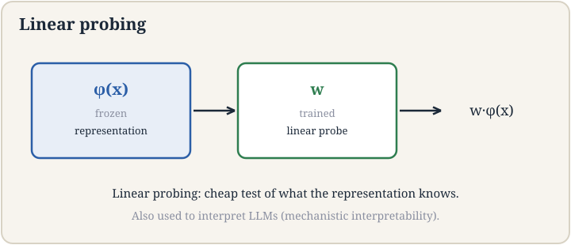

Lecture 12: Foundation Models and Representation Learning
Video blocked (ad-blocker or local file mode).
Watch on YouTubeVideo not loading? Watch on YouTube
Original lecture. Tengyu Ma presents the foundation-model paradigm: pre-training, adaptation, probing, efficient fine-tuning.
How to read this lesson
This lesson has two levels. Level 1 (Core) contains what you need to understand everything that follows in CS229 and the courses that build on it. Level 2 (Deep) contains what you need for correct, interview-grade understanding. Read Level 1 straight through. Return to Level 2 when you want depth.
No prerequisites are assumed. Every term is defined at first use. Neural networks were defined in lectures 7 and 8; they are reused, not re-explained.
Level 1: A new paradigm
After GPT-3 arrived in summer 2020 37:12 ⏱37:12, Stanford faculty gathered around the OpenAI playground and realized the field had changed. Percy Liang led a team to study the shift and named it in a survey paper: foundation models 37:59 ⏱37:59. Not an emergent paradigm anymore. The new paradigm.
The old paradigm: pick a task, collect labeled data, train a model for that task. The new paradigm has two phases. Pre-training: train one big model on massive unlabeled data 39:23 ⏱39:23, orders of magnitude more than before, messy internet text and all. Adaptation: adapt that model to many downstream tasks 39:46 ⏱39:46. You start from a good foundation instead of from scratch. That is why it is called a foundation model.

The pre-training data is deliberately broad and initially messy: HTML with tags, Word documents, everything. Quality filtering came later. The bet: scale plus diversity teaches general structure that no single task’s labels could.
Two phases. Pre-training on massive, broad, unlabeled data produces one general model. Adaptation specializes it to tasks. The old way trained one model per task from its own labels. The new way amortizes one expensive pre-training across unlimited adaptations. GPT-3 was the demonstration that this works. Labels are expensive and narrow. Unlabeled text is abundant and broad. A pre-training objective like next-word prediction turns raw text into supervision for free: every word is a label for its context. Scale of data beats quality of labels for learning general structure.
Level 1: Representation learning
Representation learning is pre-training with a specific product: a mapping from raw input to a vector 48:03 ⏱48:03. The vector is called the representation, the embedding, or the feature. The lecture uses “embedding” as the standard word. Similar inputs should land near each other in vector space.
Formally: learn phi_theta mapping x to a vector in R^m. Train it with some loss on unlabeled or weakly labeled data. Freeze the result. The frozen phi is the product. Everything downstream consumes vectors, not raw inputs.
This lecture covers the pre-ChatGPT era techniques, roughly 2019 to 2022. The post-2022 dominating approach, full LLM pre-training plus post-training, is lectures 13 through 17. The representation idea survives in all of them: every modern model is, at bottom, a machine that turns inputs into vectors.
A list of numbers that places an input in a space where distance means similarity. Two cat photos get nearby vectors. A cat photo and an airplane get distant vectors. The numbers are learned, not designed. Downstream models work in this space because similarity is now geometry: near means alike. Nobody. The dimensions are not designed to mean anything. They are whatever the training loss found useful. This is why embeddings need probing to interpret: the coordinates are emergent, not assigned. Interpretability methods exist precisely because we did not choose the axes.
Level 1: Linear probing
Once you have a frozen representation, the cheapest downstream model is linear probing 50:06 ⏱50:06: train a linear classifier on top of the fixed vectors. Prediction = w . phi(x), plus softmax for classification.

Linear probing has two uses. As a task solver: when data is scarce, a linear layer on good embeddings beats training a full network. As a measuring instrument: probe accuracy reports what the representation knows. If a linear probe can read syntax from the vectors, the representation encodes syntax. This second use survives into the LLM era as mechanistic interpretability 50:14 ⏱50:14: probes as tools for understanding what large models compute internally.
The logic is a fortiori. If even a linear model can extract the information, the information is definitely there. Probing is a lower bound on what the representation contains.
Two reasons. Data: a linear layer has few parameters, so it trains on little labeled data without overfitting. Diagnosis: freezing isolates what pre-training learned from what the task added. If the probe succeeds, credit goes to the representation. Fine-tuning everything is stronger but tells you nothing about the frozen features. Less than you hope. It proves a linear model cannot read the information, not that the information is absent. A nonlinear probe might succeed. Probing gives lower bounds on represented knowledge, never upper bounds. Absence of evidence is not evidence of absence.
Level 1: Adapting cheaply. LoRA and multitask
Full fine-tuning updates every parameter. For billion-parameter models that is expensive. LoRA, low-rank adaptation 62:59 ⏱62:59, updates less. Freeze the pre-trained weight W_0. Learn a low-rank change Delta = A B, where A and B are thin matrices. The adapted weight is W_0 + A B.
Rank r controls the budget. W_0 is d-by-d. A is d-by-r, B is r-by-d. With r much smaller than d, the update has a fraction of the parameters. The bet: task adaptation lives in a low-dimensional subspace. Empirically it usually does.
Multitask training 42:01 ⏱42:01 is the other adaptation strategy: train one model on many tasks at once, sharing the representation. Tasks regularize each other. The shared layers learn structure useful across tasks, which is exactly the foundation-model bet in miniature.
Because adapting to a new task rarely needs the full parameter space. The pre-trained model already knows language, or vision, or both. The task adds a small adjustment: a style, a format, a domain. That adjustment fits in a low-rank subspace. LoRA bets the update rank is small, and the bet usually pays. LoRA for cheap adaptation: few parameters, fast training, easy to swap adapters per task. Full fine-tuning when the task needs deep changes the low-rank update cannot express, or when you have the compute budget anyway. Many deployments use LoRA for everything and reserve full fine-tuning for the base model itself.
Level 2: Parallelism
Training foundation models needs many GPUs. Two kinds of parallelism 72:00 ⏱72:00 split the work. Data parallelism: copy the model to each GPU, give each a different data shard, average the gradients. Simple, but every GPU holds the full model. Model parallelism: split the model itself across GPUs, each holding some layers or some shards of layers. Needed when the model does not fit on one GPU.
The lecture treats parallelism as architecture co-design: the model’s shape and the hardware’s shape must be designed together. Attention’s quadratic cost from lecture 14 is the kind of fact that forces this co-design. The guest lecture on system ML continues the thread.
Level 2: What “paradigm” claims and what it does not
“New paradigm” is a strong claim. The lecture earns it with the deployment story from lecture 15: one off-the-shelf model plus prompts replaced per-company training pipelines. But the claim has limits. The paradigm covers models where pre-training transfers. For problems with no relevant unlabeled data, the old task-specific training remains the answer. Paradigms describe the center of the field, not its edges.
Also note the convergence the lecture mentions: the paradigm narrowed over five years. Early “foundation models” included many techniques. By 2026 the term mostly means pre-trained transformers plus adaptation. The course follows that narrowing: representation techniques here, the transformer core next.
Recap: the whole lesson on one screen
Eight ideas carry this lecture. Read each card. Say the core sentence out loud. If you can, you own the lesson.
One big model on massive unlabeled data, then many adaptations. Named after GPT-3 by Percy Liang's team. The new paradigm.
Key: two phases, one foundation
Massive, diverse, initially unfiltered. Scale teaches general structure. Quality filtering came later. Unlabeled is abundant.
Key: scale over labels
Representation, embedding, feature: a vector per input. Near means alike. Dimensions are emergent, not designed.
Key: similarity as distance
Prediction = w . phi(x). Cheap task solver. Honest measuring instrument. Powers mechanistic interpretability.
Key: frozen phi, trained w
Success proves the information is there. Failure proves only that a linear read failed. Never an upper bound on knowledge.
Key: a fortiori logic
W = W_0 + AB, thin A and B. Task changes live in small subspaces. Cheap, swappable, usually enough.
Key: rank r controls budget
One model, many tasks, shared layers. Tasks regularize each other. The foundation bet in miniature.
Key: shared structure
Data: shard the batch, average gradients. Model: shard the weights. Co-design architecture with hardware. Scale demands both.
Key: split work, split model
Official sources and further reading
Official: - Lecture 12 video: GPT-3 summer 2020 37:12 ⏱37:12, foundation models named 37:59 ⏱37:59, pre-training 39:23 ⏱39:23, adaptation 39:46 ⏱39:46, representation learning 48:03 ⏱48:03, linear probing 50:06 ⏱50:06, mechanistic interpretability 50:14 ⏱50:14, LoRA 62:59 ⏱62:59, parallelism 72:00 ⏱72:00. - CS229 Spring 2026 official course notes: foundation models chapter.
Further reading: - Bommasani et al. (2021), “On the Opportunities and Risks of Foundation Models”: the survey paper. - Hu et al. (2021), “LoRA: Low-Rank Adaptation of Large Language Models.”
Caveats from these sources. The paradigm narrative is a framing, not a theorem; task-specific training still wins where unlabeled data is irrelevant. LoRA’s rank is a hyperparameter; too small starves the task. Probing lower bounds are often misread as upper bounds; the lecture warns against it.
Connections to the other courses
- CS336: the full pre-training pipeline is CS336’s subject; this lecture is its conceptual on-ramp.
- CS224N: word embeddings were the original representation-learning success; sentence embeddings generalize them.
- CS329H: RLHF is adaptation by reinforcement; LoRA is adaptation by low-rank updates. Same phase, different tool.
Foundation model cheatsheet. Paradigm: pre-train on massive unlabeled data, adapt to tasks. Named by Percy Liang’s team post-GPT-3. Representation learning: phi_theta maps x to vectors; similar inputs near each other; “embedding” is standard. Linear probing: freeze phi, train w; prediction w.phi(x); measures what is represented; lower bounds only. LoRA: W_0 + AB, rank r budget. Multitask: shared layers across tasks. Parallelism: data shards batches, model shards weights.
Amortize the expensive part. Pre-training is the cost. Adaptation is the dividend. Whenever one expensive computation serves many cheap uses, you are looking at a foundation-model-shaped deal.
Sources
- VIDEOLecture 12 video, Stanford Online YouTube
- NOTESOfficial subtitle transcript (en-US)
- NOTESCS229 Spring 2026 official course notes (local PDF)